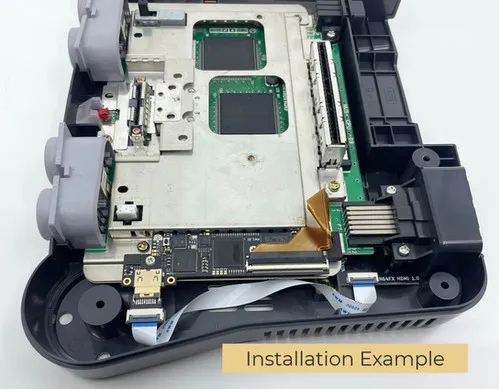
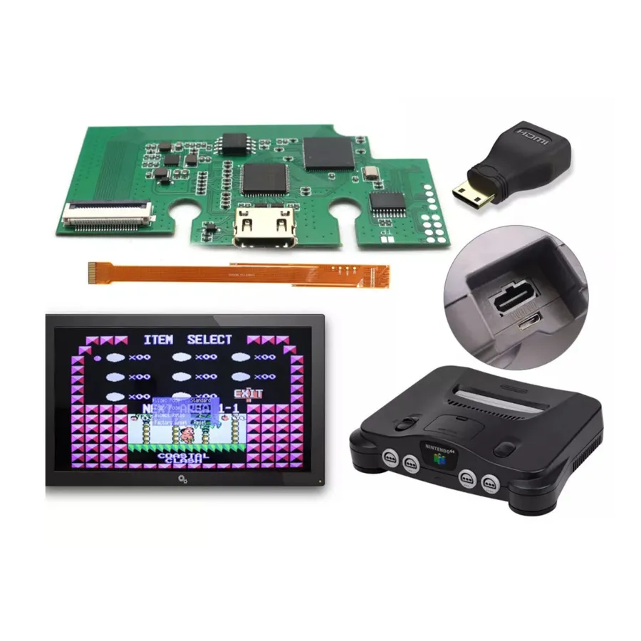
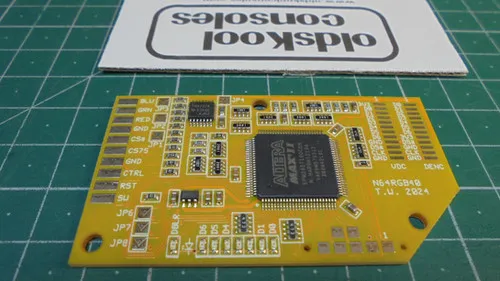
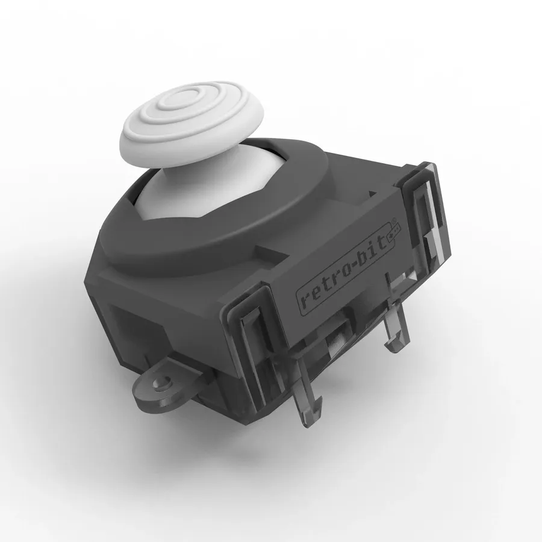
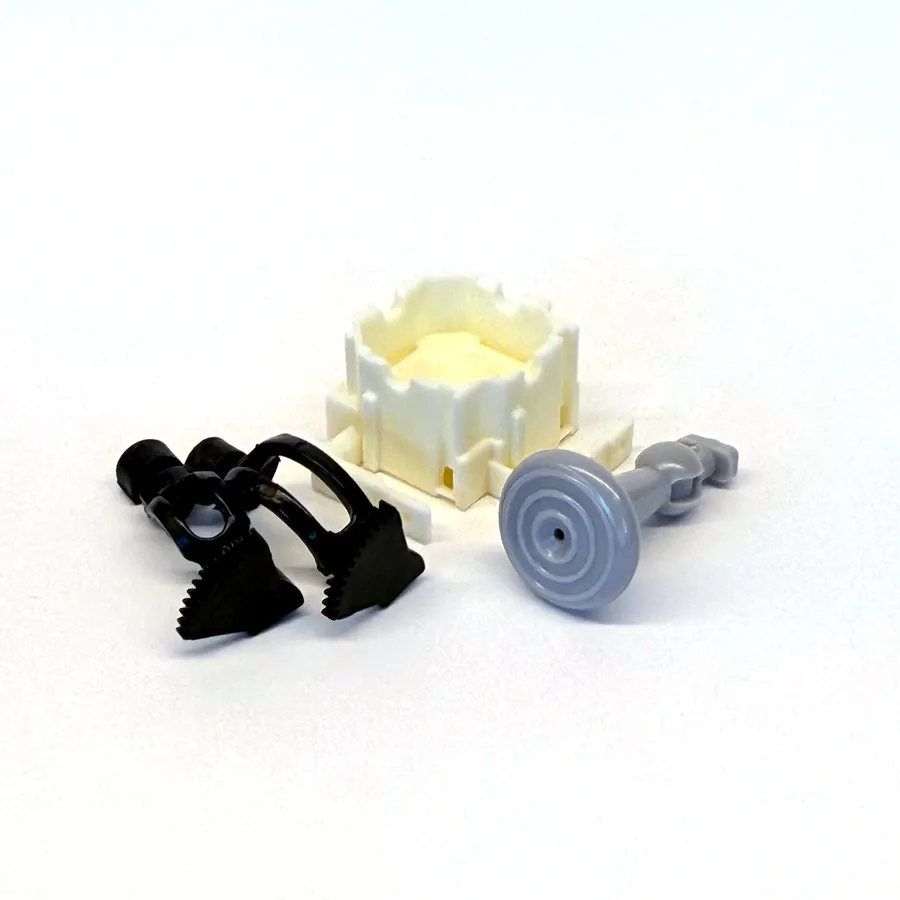

Home ›
Wiki ›
Nintendo 64
The Nintendo 64 (1996) struggles on modern TVs: blurry composite output, a joystick that wears out and drifts, and a degraded image by default. The go-to mods target three goals: a sharp image (digital HDMI or analog RGB), reliable controllers (drift-free Hall-effect stick) and unlocking the software potential (Expansion Pak, region). Here are the mods sorted by category, from plug-and-play to expert installs.
📺 Video & HDMI 🕹️ Controls & Hardware
The most transformative N64 mod: replacing the blurry composite/S-Video output with a clean digital HDMI signal, or analog RGB for CRTs and external scalers. Almost every internal HDMI kit requires advanced-level soldering directly onto the chip pins on the motherboard.
Premium ⚑ under review

© PixelFX PixelFX
N64Digital
The best possible HDMI output for the N64. A crystal-clear digital signal up to 1080p with Wi-Fi for updates.
Lag-free digital HDMI output up to 1080p Simultaneous analog RGB/YPbPr via the multiout VI De-blur, scanlines, filters and smoothing Firmware updates over Wi-Fi Compatible with all regions and models (except Pikachu without a spacer)
Type Digital HDMI
Resolution up to 1080p
Analog output RGB/YPbPr via multiout ⚠ Prerequisites : Fine soldering station, Micro-soldering experience, Shell trimming (except no-cut solution)
Strengths Benchmark image quality Advanced deinterlacing and scaling Parallel HDMI + analog outputs Upgradable firmware over Wi-Fi Trade-offs Expensive Expert-level soldering (flex + PCB) Shell trimming required for the mini-HDMI (except the no-cut Laser Bear solution) Sources : PixelFX — N64Digital Details · RetroRGB — N64Digital Mod Announced
⚑ under review
📷
Marshallh
UltraHDMI
The original HDMI mod, renowned for its fidelity and a unique de-blur mode praised by the community.
Digital HDMI output VI De-blur regarded as one of the best High-quality scaling Full configuration menu Analog output options on recent revisions
Type Digital HDMI
Feature VI De-blur ⚠ Prerequisites : Micro-soldering experience, Find stock (group buy / installer)
Strengths Benchmark image quality Excellent de-blur Deep configuration Trade-offs Very limited availability (group buys / installers) Expensive Expert-level soldering Sources : ConsoleMods Wiki — UltraHDMI · RetroRGB — UltraHDMI
⚑ under review
📷
GameBox Systems
64HD (HDMI interne)
A high-end alternative to the N64Digital: internal HDMI output with no shell trimming and a complete feature set.
Internal HDMI output with no trimming 1080i60 / 720p60 / 480p60 / 240p60 resolutions Scaling modes (1:1, full screen, linear, overscan) VI De-blur, pixel filters and scanlines Compatible with all regions (PAL & NTSC)
Type Internal digital HDMI
Resolutions 1080i / 720p / 480p / 240p
De-blur Yes ⚠ Prerequisites : Micro-soldering experience
Strengths No shell trimming Rich scaling and filter options Excellent image quality Trade-offs Advanced-level soldering onto chip pins High price Sources : RetroRGB — GameBox 64HD Internal HDMI Mod
⚑ under review

© RetroSix US Hispeedido
N64HDMI (720p)
Entry-level HDMI solution to get 720p on the N64, ideal for a limited budget.
720p HDMI output 3 aspect-ratio settings 8 color modes via OSD Controller-driven OSD Compatible with all regions (except Pikachu)
Type Digital HDMI
Resolution 720p
OSD Yes ⚠ Prerequisites : Micro-soldering experience
Strengths The best value to go HDMI Controller-driven OSD Trade-offs Limited options (no advanced scaling or comparable de-blur) Advanced soldering onto chip pins required Sources : Hispeedido N64 HDMI 720p — oldskoolconsoles
⚑ under review

© oldskoolconsoles Tim Worthington
N64RGB Mod Kit
The ideal solution for CRT owners or external scalers (OSSC, RetroTINK): a clean analog RGB signal.
Pure analog RGB signal Compatible with all models, NTSC and PAL De-blur feature on some versions Essential to get RGB on EU/FR models
Type Analog RGB
Compatibility All NTSC/PAL models ⚠ Prerequisites : RGB SCART/multiout cable, External scaler (OSSC/RetroTINK) or RGB CRT display
Strengths Pro image quality on CRT/scaler Compatible with all board revisions Reversible mod Trade-offs Soldering required No direct HDMI output (needs an external scaler) Sources : etim.net.au — N64RGB · ConsoleMods Wiki — RGB Compatible Systems
The N64's Achilles' heel: the original mechanical joystick wears out fast and ends up drifting. Replacing it (Hall effect or OEM-style part) transforms the experience. This section also covers RAM and region.
New ⚑ under review

© RetroRGB — Hall Effect N64 Analog Stick Kit by Retro-Bit Retro-Bit
Stick à effet Hall (module analogique)
Replace the fragile mechanical joystick with a magnetic Hall-effect module that never wears out and never drifts.
Hall-effect sensors (no mechanical wear) Module in the controller's original form factor GameCube-style (Tribute64) Screwdriver install, no soldering
Technology Hall effect
Mounting Plug-and-play (screwdriver) ⚠ Prerequisites : Tri-wing screwdriver to open the controller
Strengths Eliminates drift for good Lasting precision Simple, solder-free install Trade-offs Feel differs from the original stick Travel/feel may need adjusting to taste Sources : RetroRGB — Hall Effect N64 Analog Stick Kit by Retro-Bit · GamesRadar — N64 Hall Effect thumbstick mod
⚑ under review

© Kitsch-Bent Kitsch-Bent
Kit de réparation joystick (style origine)
A replacement faithful to the original Nintendo design to restore a worn or drifting joystick.
Parts faithful to the original design Restores the original feel Gear sets and thumbstick available separately
Type OEM-style mechanical module
Mounting Screwdriver ⚠ Prerequisites : Tri-wing screwdriver to open the controller
Strengths Feel close to the original Affordable Solder-free install Trade-offs Still a mechanical part (eventual wear) Slight deadzone possible depending on the batch Sources : Kitsch-Bent — N64 Joystick Repair Kit
Essential ⚑ under review
📷
Nintendo / Generic
Expansion Pak
Double your console's RAM to unlock higher resolutions and access the games that require it.
Goes from 4 MB to 8 MB of RAM Required for Majora's Mask and Donkey Kong 64 Better resolutions/textures in some games
RAM 4 MB → 8 MB
Mounting Memory slot ⚠ Prerequisites : Jumper Pak extraction tool (included with the original Expansion Pak)
Strengths Essential for some titles Instant install (dedicated slot) Reversible Trade-offs Original units can be pricey The Jumper Pak must be removed Sources : ConsoleMods Wiki — N64 Mods Wiki
⚑ under review
📷
Générique
Mod région / adaptateur de tray
Play NTSC imports: a tray adapter (or modifying the cartridge slot) unlocks US/JP games on an NTSC console.
Adapter tray to accept US and JP cartridges No soldering (swap the tray or remove the block) Fully reversible
Type NTSC region (US ↔ JP)
Mounting Tray / cartridge slot ⚠ Prerequisites : Gamebit (security) screwdriver
Strengths Access to NTSC imports Reversible No soldering Trade-offs Doesn't make an NTSC console PAL-compatible or vice versa (hardware differences) Gamebit screwdriver required Sources : Racketboy — How To Mod The N64 To Play Imports
General sources : ConsoleMods Wiki — N64 Mods · RetroRGB — N64 RGB Compatible Systems